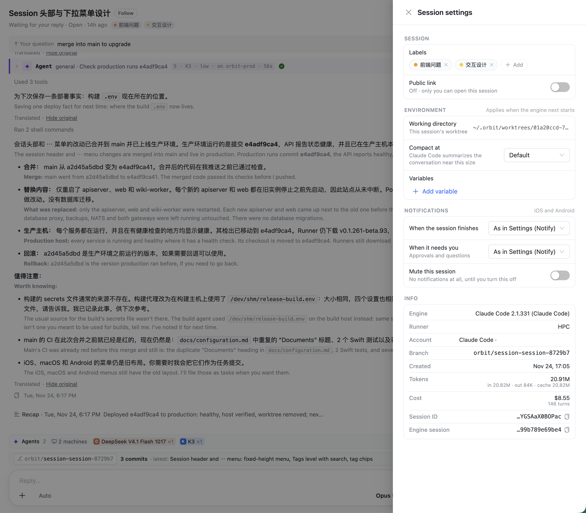

Web 控制台 · 2026-11-25 · 现状为 SessionSettingsDrawer（440px 抽屉，盖住对话、背后变暗）。方案：与 Project sessions 侧栏同一位置、同一套行为的
Settings 侧栏，对话照常可读可写；点会话标题即开关。中文为批注，界面文字为英文。

aside.session-col，✕ 或 Esc 收起）；设置却是另一种浮层，两种右侧面板行为不一致。无遮罩：对话仍可滚动、可回复。侧栏内部单独滚动。
侧栏保持打开，内容换成新会话的设置（像 Project sessions 侧栏一样记住开/关）。新建会话（composer 状态）没有设置可看：侧栏暂时隐藏，回到已有会话再出现。
③-a 静止：与现在一样，不加任何装饰。
③-b 悬停：浅灰底 + ›，鼠标变手形，提示 "Session settings"。
③-c 侧栏打开：浅蓝底（与 Project sessions 按钮按下时同色）。
全选文字、光标在开头（与现在的标题编辑器一致）。保存后标题即时更新；项目管理的标题在这里改名后同样脱离项目同步（服务端现有规则不变）。
点标题：Settings 换进右侧槽位，Project sessions 让位（▦ 按钮变回未按下）。点 ▦：反过来。✕ 收起 Settings 时，若之前开着 Project sessions，就回到它。窗口再宽也不并排两栏——对话会被挤得太窄。
放不下并排时，侧栏浮在对话右侧之上（阴影、无遮罩），与项目侧栏"按需打开"时一样；点对话区域不关闭，✕/Esc 关闭。
没有侧栏的位置：点标题推入一整页（‹ Back 返回对话），不是抽屉。
| 情况 | 行为 |
|---|---|
| 点标题 / ⋯ → Session settings… | 开关 Settings 侧栏（同一个状态） |
| ⋯ → Rename… | 打开侧栏并聚焦 Name、全选 |
| 双击标题 | 按 Q1 定：A 不再有特殊行为（第二下又把侧栏关上，所以双击≈无变化）；B 保留改名 |
| 开着侧栏切换会话 | 保持打开，内容换成新会话；新建会话时暂隐 |
| Project sessions 也要开 | 同一槽位一次一个；✕ 收 Settings 回到之前的项目侧栏 |
| 宽度 | 320–560px，默认 380，拖动左缘，本机记住 |
| 窄窗口 / 手机 | 浮在对话上（无遮罩）/ 推入整页 |
| 回收站里的会话 | 标题不可点（没有可设置的东西），与现在 ⋯ 菜单一致 |
| 文件 | 改动 |
|---|---|
src/web/src/components/SessionSettingsDrawer.tsx | 拆出内容为 SessionSettingsPanel；手机仍用整页容器；加 Name 行 |
src/web/src/components/WorkspaceView.tsx | 标题改为按钮、开关侧栏；右侧槽位在 Settings 与 Project sessions 之间切换；Rename… 改为打开侧栏；去掉双击改名（Q1=A） |
src/web/src/index.css / SessionSettingsDrawer.css | 侧栏、标题悬停/选中样式 |
| 测试 | 标题点击开关、Esc、Rename… 聚焦、与项目侧栏互换、切换会话保持打开 |
Q1 · 双击标题改名还要吗？
Q2 · 和 Project sessions 侧栏的关系
Q3 · 切换会话时
Q4 · 范围：先做 Web；iOS / macOS / Android 的会话设置页另行对齐（它们现在是各自平台的 sheet/页面）。